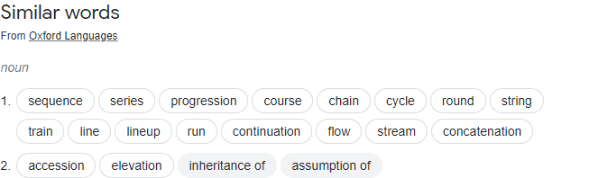

Our first pygame - move reusable code out - part 11
IMPORTANT
We jump into coding so we can learn, BUT we don’t know what we already have from the language, from the library, and we don’t know what other libraries are available.
It is wise once past a cetain level of understanding to STOP, and take a look around.
We should evaluate anything that is already in the game. What can be replaced by what is offered? What is reusable for later projects? Is our code a mess? Are there duplicate bits of code, or even code no longer doing anything?
- we could make food into a game object.
- take duplcated code and place it where it only has to exist once, i.e. a function, a paent class, etc.
We wont be changing behaviour yet so if you are impatient to get back to the game, sorry. Stick with me here and I’ll explain the changes, else just skip this and try figure it out from the git commits. Some commits may be larger than they should and some may be broken after.
I do fix some bugs - even though the essence of reactoring is not to change behaviour.
Optimization basics
Games have what they call - a tight loop. A tight loop is commonly a loop which is runs many times in succession.  In any other app the tight loop could add several minutes or hours of waiting.
The game loop is designed to run tasks repeatedly to make our game responsive. If we add slow code to it, we have lag or animation stutter. There are ways around much of this - we call this optimization. Slow code can be moved out of the loop or update on its own thread, or even in some cases replaced by faster code.
Some of the calculations that are being used can be replaced by using pygame’s Rect. I think I’d like to use the pygame sprite because it has some of what we do already built in plus it already makes use of Rect.
I’m going to use the screen redraw not dirty sprites (declare small area of screen underneath the sprite as dirty i.e. it needs to be redrawn) is good for limited objects when a small portion of the screen needs redrawing but not for many objects or background moves. Worm starts out as a few objects but soon becomes long enough to fill the screen.
We will try not to change behaviour with this exercise. If I do I will point it out.
As for code reuse - there are many existing python/pygame libraries to choose from that you may want to use. If it does what you want it may be good to use. One word of caution, Other peoples code may change or be abandoned. Fork the Github code if you wish to use it, then you are not too dependant, and may contribute if the project allows.
Use Sprites
Sprites are mostly wrappers for code you may already have, you may simply prefer to use RECT than change everything. I’m going to go through this so you can see.
I’ll make a seperate sprite object and use it as the basis for food. Then I’ll incorporate in as part of gameObject. Well thats the plan. The referance for Sprites is https://www.pygame.org/docs/ref/sprite.html
Just above GameObject we’ll create a SpriteObject.
class SpriteObject(pygame.sprite.Sprite):
def __init__(self, img_file, scale = 1):
# Call the parent class (Sprite) constructor
pygame.sprite.Sprite.__init__(self)
self.image = pygame.image.load(img_file)
self.image = pygame.transform.scale_by(self.image, scale )
self.rect = self.image.get_rect()
- We inherit the Sprite from pygame
- We pass the image file name
- load the image
- scale the image
- set rect ~ I’m not really sure why its necessary, perhaps I should read the docs
We don’t use convert on the image, though it would be more efficient. We do know we have a set colored background. We also don’t use group yet.
To stick with the group naming of functions we will have to address my use of the name update and move of my functions when we implement that.
create the food
#food
food =
SpriteObject("assets/food/tile_coin.png",
SCALESIZE)
food.rect.center =
(TILESIZE[0] * 9 + TILESIZE[0]/2),
(TILESIZE[1] * 9 + TILESIZE[1]/2)
We create the food sprite with an image and the scalesize we want to use.
We use rect.center to position the Sprite in our grid
Next we change the eat food portion
if player.eat_food(food):
player.grow_tail(screen_size,
start_speed,
Tail, player,
player_tail)
and
def eat_food(self, food):
if (self.rect.center == food.rect.center):
x = random.randrange(0, 20)
y = random.randrange(0, 14)
food.rect.center = (self.tilesize[0] * x + self.tilesize[0] * SCALESIZE) , (self.tilesize[1] * y + self.tilesize[1] * SCALESIZE)
return True
return False
and finally draw the food
screen.blit(food.image, food.rect)
We could use a sprite group for food
food_group = pygame.sprite.Group()
food_group.add(food)
food_group.draw(screen)
Its a good place to test and commit your changes.
NEXT
- make all our gameobjects sprites
- reduce duplicate code
- rename sprite object to grid sprite object
GameObject can inherit SpriteObject
class GameObject(SpriteObject):
And we make use of the init code - reducing the code we need
def __init__(self, speed, tilesize, img_file, screen_size):
super().__init__(img_file, SCALESIZE)
Now move player_tail into Player and rename it to tail or even better tailpieces or tail_pieces. All other refernces to player_tail change too.
While we are at it we want to change Player to head as that is all it is, and we want to create a new Player or Worm class. I’m going with player not worm though it is confusing.
class Player():
tail_group = pygame.sprite.Group()
def __init__(self, speed, tilesize, screen_size):
self.head = Head(speed, tilesize, screen_size)
This allows up to keep all the player parts together.
player = Player(start_speed, TILESIZE, screen_size)
dt_distance = player.head.speed * dt
move_start = player.head.move(dt_distance,new_direction,def_direction,continuous)
for t in player.head.tailpieces:
t.move(move_start, dt_distance)
Notice all the old player calls will now be player.head calls. Change the remaining ones.
We continue and end up with a few bugs that need to be fixed and we have to move much code around still. Setup next move has to be moved to its parent as the tail crashes when near the edge.
We also remove Delta Time class and use the pygame clock tick instead
clock.tick(FPS)
dt = clock.get_time()
Other cleanup is also required so to keep this short here is the final result.
import math
import random
import pygame
from pygame.locals import *
from mygame_library import *
#### HARD CODED VALUES
BLACK = (0,0,0)
WHITE = (255,255,255)
STANDARD_IMAGE_SIZE = (80,80)
ASPECT = (10,7)
SCALESIZE = 0.5
SCALEDTILESIZE = (STANDARD_IMAGE_SIZE[0] * SCALESIZE, STANDARD_IMAGE_SIZE[1] * SCALESIZE)
#### global style variables
start_speed = 0.4 * SCALESIZE
# set window size
SCREENSIZE = width, height = (STANDARD_IMAGE_SIZE[0] * ASPECT[0], STANDARD_IMAGE_SIZE[0] * ASPECT[1]) # 800,560 if 80x80
screen = pygame.display.set_mode(SCREENSIZE)
#build background
#grid centers - get while drawing grid lines on the background
x_tile_pos = []
y_tile_pos = []
background = pygame.Surface.copy(screen)
background.fill(WHITE)
# draw grid on background
screen_width = SCREENSIZE[0]
screen_length = SCREENSIZE[1]
#draw vertical lines on background
for x in range(0, SCREENSIZE[0], int(SCALEDTILESIZE[1])):
x_tile_pos.append(x + int(SCALEDTILESIZE[1])/2)
pygame.draw.line(background, BLACK, (x,0), (x,screen_length))
#draw horizontal lines on background
for y in range(0, SCREENSIZE[1], int(SCALEDTILESIZE[0])):
y_tile_pos.append(y + int(SCALEDTILESIZE[0])/2)
pygame.draw.line(background, BLACK, (0,y), (screen_width,y))
#### end build background ####
class GridObject(pygame.sprite.Sprite):
def __init__(self, img_file, scale = 1, gridpos = (0,0)):
# Call the parent class (Sprite) constructor
#pygame.sprite.Sprite.__init__(self)
super().__init__()
self.image = self.get_loaded_and_scaled_image(img_file, scale )
self.rect = self.image.get_rect()
self.rect.center = self.get_px_center_from_gridpos(gridpos)
def get_loaded_and_scaled_image(self, img_file, scale) -> pygame.surface:
image = pygame.image.load(img_file)
image = pygame.transform.scale_by(image, scale )
return image
def get_px_center_from_gridpos(self, gridpos):
#x,y = (SCALEDTILESIZE[0] * gridpos[0] + SCALEDTILESIZE[0]/2) , (SCALEDTILESIZE[1] * gridpos[1] + SCALEDTILESIZE[1]/2)
x,y = x_tile_pos[gridpos[0]], y_tile_pos[gridpos[1]]
return (x,y)
def get_tile_center_positions(self):
return (x_tile_pos,y_tile_pos)
class GameObject(GridObject):
start_move_pos = (0,0)
end_move_pos = (0,0)
direction = (0,0)
min = (0,0)
max = (0,0)
boundary_check = "none"
last_end_move_pos = (0,0)
last_start_move_pos = (0,0)
last_direction = (0,0)
last_boundary_check = "none"
def __init__(self, speed, tilesize, img_file):
super().__init__(img_file, SCALESIZE)
self.tilesize = tilesize
self.start_move_pos = self.rect.center
self.speed = speed
self.max = SCREENSIZE
self.collide_rect = Rect(
self.rect[0] + self.rect[2]/2 - 1,
self.rect[1] + self.rect[3]/2 - 1,
self.rect[2] - self.rect[2]/2 + 1,
self.rect[3] - self.rect[3]/2 + 1)
#print("==============")
#print(self.rect)
#print(self.collide_rect)
#print("==============")
self.just_created = True
def is_end_of_move(self, dt_distance):
return abs(math.dist(self.rect.center, self.end_move_pos)) <= abs(dt_distance)
def setup_next_move(self, direction, end_move_pos):
self.last_end_move_pos = self.end_move_pos
self.last_start_move_pos = self.start_move_pos
self.last_direction = self.direction
self.last_boundary_check = self.boundary_check
self.direction = self.fix_direction(direction)
self.rect.center = end_move_pos
self.start_move_pos = end_move_pos
self.end_move_pos = self.get_destination(self.start_move_pos, self.direction)
def keep_moving(self, dt_distance):
velocity = (self.direction[0] * dt_distance, self.direction[1] * dt_distance)
self.rect = self.rect.move(velocity)
# normalize direction
def fix_direction(self, end, start=(0,0)):
dx = end[0] - start[0]
dy = end[1] - start[1]
if dx > 0: dx = 1
if dx < 0: dx = -1
if dy > 0: dy = 1
if dy < 0: dy = -1
return (dx, dy)
#currently only works with 4 directions
def check_boundaries(self):
x_pos,y_pos = self.get_tile_center_positions()
if self.boundary_check != "none":
return
end_move_pos = self.end_move_pos
if self.rect.left <= 0 and self.direction[0] < 0:
self.set_boundary_check("left")
end_move_pos = (x_pos[len(x_pos) -1] + self.tilesize[0], self.rect.center[1])
if self.rect.right >= self.max[0] and self.direction[0] > 0:
self.set_boundary_check("right")
end_move_pos = (x_pos[0] - self.tilesize[0], self.rect.center[1])
if self.rect.top <= 0 and self.direction[1] < 0:
self.set_boundary_check("top")
end_move_pos = (self.rect.center[0], y_pos[len(y_pos) -1] + self.tilesize[1])
if self.rect.bottom >= self.max[1] and self.direction[1] > 0:
self.set_boundary_check("bottom")
end_move_pos = (self.rect.center[0], y_pos[0] - self.tilesize[1])
if self.boundary_check in ["left","right","top","bottom"]:
self.setup_next_move(self.direction, end_move_pos)
def set_boundary_check(self, side):
self.boundary_check = side
def draw_wrap_image(self,rect,image,screen):
# Draw echo/ghost/disapearing-character Rect(left, top, width, height)
if (self.boundary_check == "left"):
shifted_rect = pygame.Rect(rect[0] - self.max[0], rect[1], rect[2], rect[3])
elif (self.boundary_check == "right"):
shifted_rect = pygame.Rect(rect[0] + self.max[0], rect[1], rect[2], rect[3])
elif (self.boundary_check == "top"):
shifted_rect = pygame.Rect(rect[0], rect[1] - self.max[1], rect[2], rect[3])
elif (self.boundary_check == "bottom"):
shifted_rect = pygame.Rect(rect[0], rect[1] + self.max[1], rect[2], rect[3])
if (self.boundary_check in ["left", "right", "bottom", "top"]):
screen.blit(image, shifted_rect)
def draw(self, screen):
screen.blit(self.image,self.rect)
def get_destination(self, from_pos, direction, num_tiles = 1):
return (from_pos[0] + direction[0] * self.tilesize[0], from_pos[1] + direction[1] * self.tilesize[1])
class Head(GameObject):
def __init__(self, speed, tilesize):
super().__init__(speed, tilesize, "assets/player/blue_body_squircle.png")
self.face_image = self.get_loaded_and_scaled_image("assets/player/face_a.png",SCALESIZE)
## draw 2nd image onto first
self.face_rect = self.face_image.get_rect()
self.face_rect.center = self.rect.center
self.image.blit(self.face_image, self.face_rect)
self.end_move_pos = self.get_destination(self.start_move_pos, self.direction)
def eat_food(self, food):
# the actual placing of the food should be done by food
if (self.rect.center == food.rect.center):
x = random.randrange(0, 20)
y = random.randrange(0, 14)
food.rect.center = food.get_px_center_from_gridpos((x,y))
return True
return False
def collide(self, tails):
for t in tails:
if pygame.Rect.colliderect(self.collide_rect, t.collide_rect) and t.just_created == False:
return True
return False
def update(self, dt_distance, new_direction, def_direction, continuous):
direction = self.direction
if direction != (0,0) or new_direction != (0,0):
if (self.is_end_of_move(dt_distance)):
self.collide_rect.center = self.rect.center
if (continuous and new_direction == (0,0)):
direction = def_direction
else:
direction = new_direction
self.setup_next_move(direction, self.end_move_pos)
self.set_boundary_check("none")
return True
else:
self.collide_rect.center = self.rect.center
#keep moving we are not there yet
self.check_boundaries()
self.keep_moving(dt_distance)
return False
def draw(self,screen):
super().draw(screen)
self.draw_wrap_image(self.rect,self.image,screen)
self.draw_wrap_image(self.face_rect,self.face_image,screen)
class Tail(GameObject):
def __init__(self, speed, tilesize):
super().__init__(speed, tilesize, "assets/player/blue_body_circle.png")
def add_object_to_follow(self, obj):
self.object_to_follow = obj
self.rect.center = obj.rect.center
self.end_move_pos = obj.rect.center
self.start_move_pos = obj.rect.center
def complete_move(self):
self.last_end_move_pos = self.end_move_pos
self.last_start_move_pos = self.start_move_pos
self.last_direction = self.direction
self.last_boundary_check = self.boundary_check
self.rect.center = self.object_to_follow.last_start_move_pos
self.start_move_pos = self.object_to_follow.last_start_move_pos
self.end_move_pos = self.object_to_follow.last_end_move_pos
self.boundary_check = self.object_to_follow.last_boundary_check
self.direction = self.object_to_follow.last_direction
def follow(self, dt_distance):
self.check_boundaries()
self.keep_moving(dt_distance)
def update(self, move_start, dt_distance):
if move_start:
self.collide_rect.center = self.rect.center
self.just_created = False
self.complete_move()
else:
self.collide_rect.center = self.rect.center
self.follow(dt_distance)
def draw(self,screen):
super().draw(screen)
self.draw_wrap_image(self.rect,self.image,screen)
class Player():
tail_group = pygame.sprite.Group()
tailpieces = []
def __init__(self, speed, tilesize):
self.head = Head(speed, tilesize)
def grow_tail(self, screen_size, start_speed):
t = Tail(start_speed, self.head.tilesize)
self.tail_group.add(t)
if (len(self.tailpieces) > 0):
t.add_object_to_follow(self.tailpieces[len(self.tailpieces) - 1])
else:
t.add_object_to_follow(self.head)
self.tailpieces.append(t)
def update(self, dt, new_direction, def_direction):
dt_distance = self.head.speed * dt
move_start = self.head.update(dt_distance,new_direction,def_direction,True)
self.tail_group.update(move_start, dt_distance)
if self.head.eat_food(food):
self.grow_tail(self.head.max, self.head.speed)
if self.head.collide(self.tailpieces):
return True
return False
def draw(self, screen):
self.head.draw(screen)
self.tail_group.draw(screen)
# GAME CODE
screen.blit(background,(0,0))
pygame.display.update()
player = Player(start_speed, SCALEDTILESIZE)
food = GridObject("assets/food/tile_coin.png",SCALESIZE, (9,9))
# we use a group for food as the game can have more that one piece of food
food_group = pygame.sprite.Group()
food_group.add(food)
# Initialize the pygame code
pygame.init()
clock = pygame.time.Clock()
# Max frame rate
FPS = 60
# movement
held_keys = KeyInput()
continuous = True
#keypress_for_partialtime = False
game_running = True
#game loop
while game_running:
clock.tick(FPS)
dt = clock.get_time()
game_running = held_keys.getEvents()
new_direction = held_keys.get_first_of_remaining_pressed()
def_direction = held_keys.get_last_direction_chosen()
player_collide = player.update(dt, new_direction, def_direction)
if player_collide:
game_running = False
#clear the display
screen.blit(background,(0,0))
# place images on the screen
food_group.draw(screen)
player.draw(screen)
# apply screen changes
pygame.display.update()
# quit the pygame window
pygame.quit()
Sory for the long listing.
This game needs some code to prevent the food being placed under the worm, and it could do with sounds and various screens found in other games.
This whole exercise has been messy. I could move on to monogame and compare it. It is very similar but uses C#.
I could also try something different like GameMaker, which is a game engine I’ve avoided. I don’t plan on covering Godot, because that engine has grown up and is comparable to Unity and Unreal, yet easier to learn.
If you approach a game engine with code first then you are not benefitting from the engine much, mostly just fighting against it.